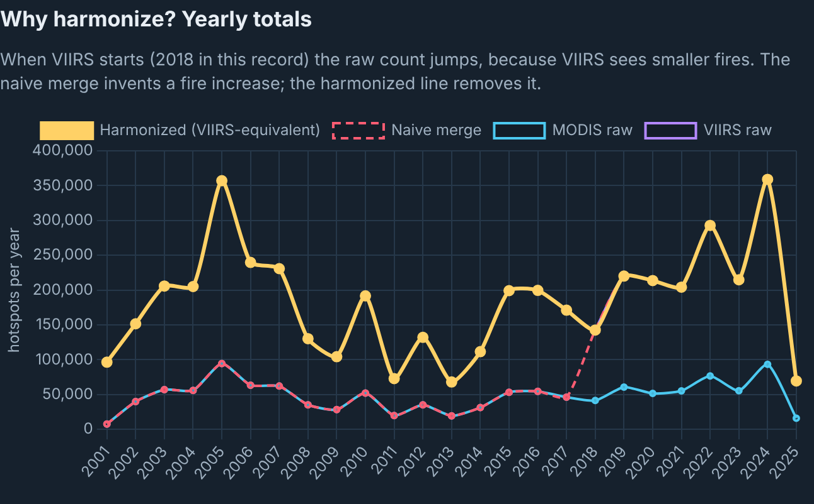
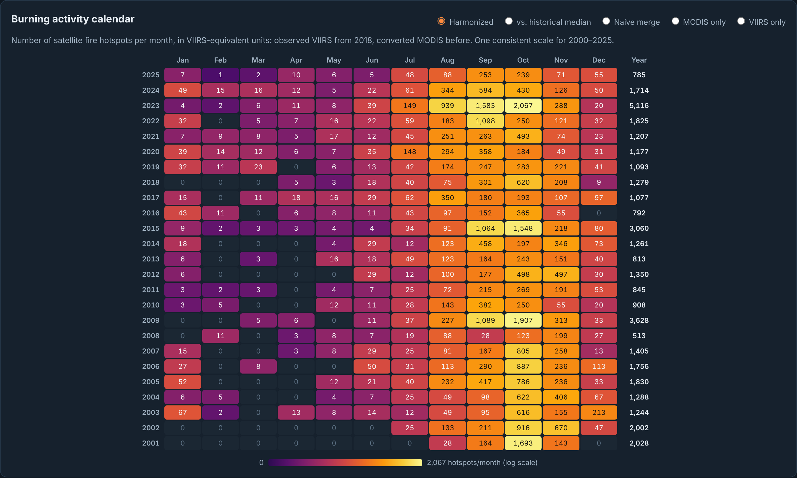
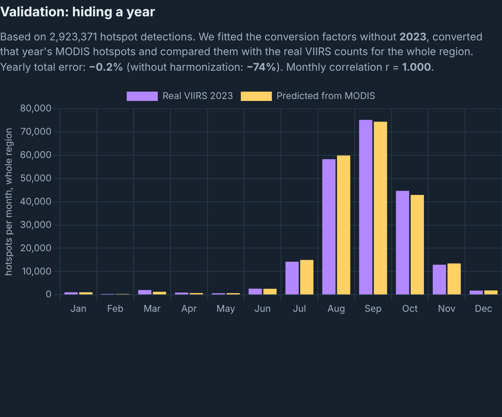

25 years of NASA fire hotspots for the Amazonas, with MODIS and VIIRS on one consistent scale.


Night factors are larger: VIIRS detects many weak night fires that MODIS misses.

Data: NASA FIRMS (MODIS C6.1, VIIRS 375 m NOAA-20). Map © OpenStreetMap contributors. AI use: code and text written with assistance from Claude (Anthropic); idea, method review and checks by the team.
Try it: samuelvf123.github.io/fogo-alerta-calendar
Code: github.com/Samuelvf123/fogo-alerta-calendar